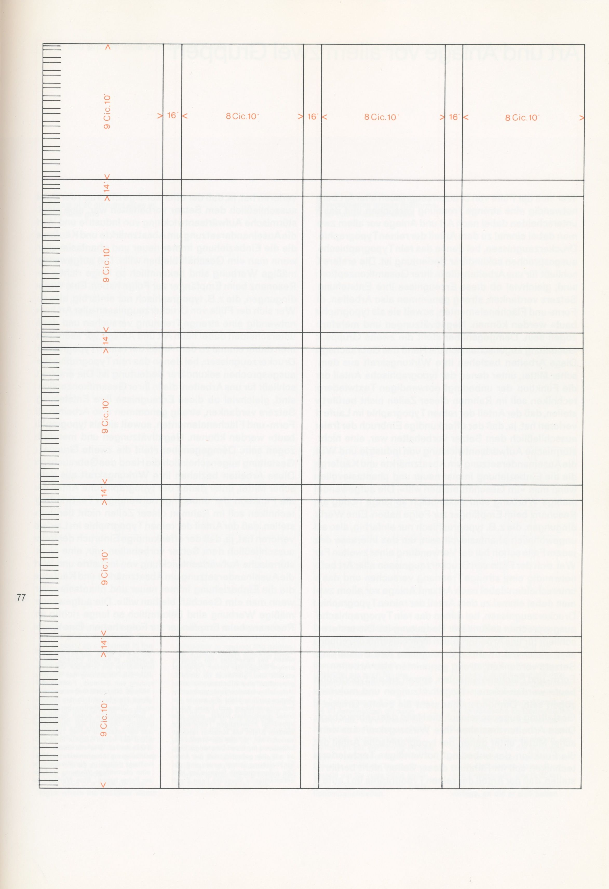
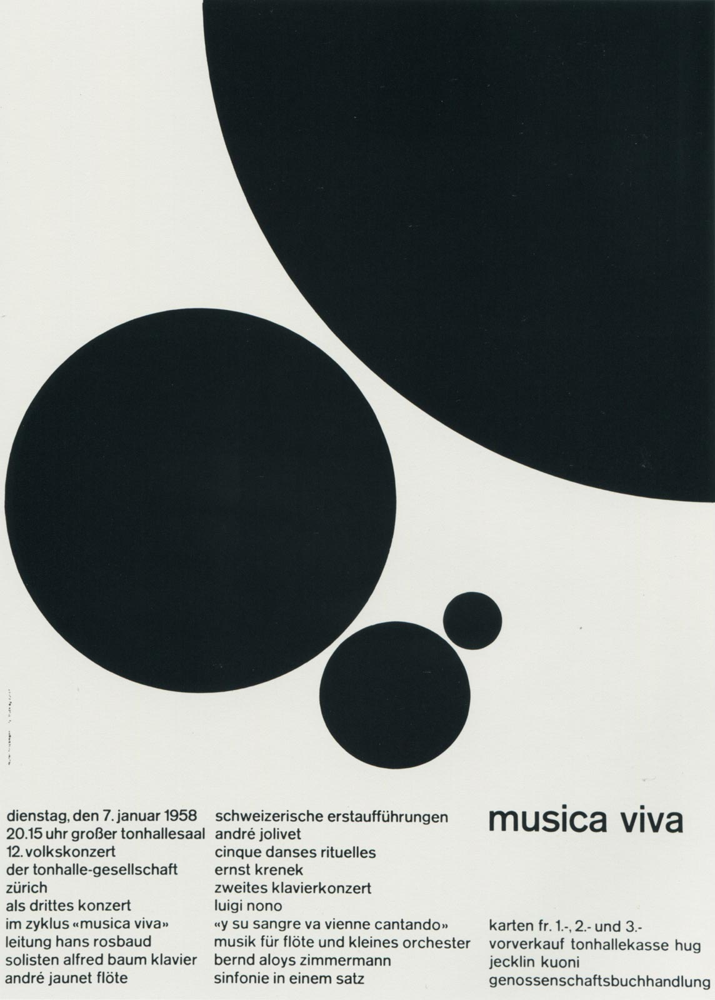

What Josef Müller Brockmann has taught me about design?
By Matthew McLaughlin
Introduction
Josef Müller Brockmann is undoubtedly one of the most influencers designers in the world. The way that he approached design was so different from anything that the world had seen before. Personally he has really influenced me as a designer and opened my mind to new ways of doing things that I would never have thought of. In this essay I will talk about some of the fundamentals he followed and the impact they along with his work had on me and continues to inspire me.
History
Müller-Brockmann was born in 1914 and grew up in Switzerland before attending the University of Zurich. In 1936 he opened his first studio in Zurich. He became one of the leading theorists of Swiss Style. He worked for many different clients throughout his career but most notably the Zurich Tonhalle. With his posters for Musica Viva. These posters have become infamous as some of Müller-Brockmann’s most notable work. Later in his career he replaced Ernst Keller as the professor of graphic design at the Kunstgewerbeschule in Zurich. He also co-created a magazine called “Neue Grafik/ New Graphic Design” with designers such as Richard Paul Lohse, Hans Neuburg and Carlo Vivarelli. After that in 1967 he became a consultant for IBM and created his own communication agency called Müller-Brockmann & Co. Before he died in Zurich on 30th August 1996. As you can see Müller-Brockmann lived a very interesting life and contributed to many different projects. His approach and drive where one of the things that got him to be the designer he was and as popular as he was.
Swiss Style
Swiss Style is often considered as the “evolution of modern design” and Müller-Brockmann was considered one of the pioneers of this era of the Swiss school of international style. This was an interesting time with Constructivism and the Bauhaus pushing Müller-Brockmann into a new way of doing things that really opened himself up to creative expression within his work. How he approached his designs always depended on the needs of whatever the project was. I find this interesting as when I am working on my own projects it makes me think am I adapting to the needs of the project? Or am I letting an initial idea I had take over and spending too much time on that. I think what Müller-Brockmann thought about this topic is incredibly relevant, he said that the content you are trying to get across is the whole reason you are designing it in the first place. He was also a big fan of using geometric shapes and not afraid to use negative space in his work. This is another aspect of his work that inspires me as often it can seem like we need to fill the entire page but it doesn’t have to be like this and for Müller-Brockmann he was really ahead of his time with minimalistic style as it has become incredibly popular in this modern age.
The Grid System
In 1981 Müller-Brockmann published a book titled. “Grid Systems in Graphic Design”. In this book Müller-Brockmann tries to provide the designer with a practical solution to enable them to be able to organise and design more efficiently. In this book he describes a grid as a two-dimensional plane into smaller compartments. Müller-Brockman tells us that the grid can be used across a range of different things you are designing for.
“The grid system is an aid, not a guarantee. It permits a number of possible uses and each designer can look for a solution appropriate to his personal style. But one must learn how to use the grid; it is an art that requires practice.”
His ideas about grids have really inspired me to include these ideas in my designs but as well as that throughout different industries that have become big since this book was written. Such as web design. This is a discipline that has really been influenced by Müller-Brockman’s ideas about how grids should be used in design. This was a big reason why I found him so interesting. Some of his principles that have influenced web design and subsequently me was margin proportion. This is how all text should include a margin between 1 and 5mm.
This is because a well-proportioned margin really gives the reader more pleasure. This is something that we commonly see if we click onto any website. This has become an even more important principle within web design as it is easier to read from print based media which Müller-Brockman was referring to than on a screen. This is something that recently I have learned to spend more time looking at as it is such an important part of working with text. As someone will only want to continue reading if it is easy for them to do so.
Another principle Müller-Brockman talks about in this book that is used a lot today in different disciplines is body and display typefaces. He talks about how important it is for designers to be able to pick typefaces that suit the job we are doing. This is obviously something that we see today throughout web design and the importance of having body and display type that fits well together. We even see services like Google fonts who provide web fonts for people to use. They have their font pairing for all the fonts they offer to help designers efficiently find fonts to match the ones they are using for the project. Müller-Brockmann also talks about using different sizes of type and the importance of the difference in sizing being clearly distinguishable as well as this, the differences in the font weight. This helps the person viewing it to read it easier. This is something that web design has really taken into account and you can commonly see this principle being used across the web.
Zurich Town Hall Theater Production Posters
Some of what are considered Müller-Brockmann greatest pieces of work came from his time working with the Zurich tonhalle for their range of “Musica viva” posters. This collection of concept posters he created really have influenced me in different ways. Firstly the simplicity Müller-Brockmann uses throughout this collection of designs shows me how using typography and minimal graphics is a really interesting approach to design. It also shows us his content first approach to design.
“The work is graphic, rather than illustrative. Some critics say these posters created a mathematical harmony, which reflected the harmony of music.”
I thought this quote was really interesting as it is referring to how Müller-Brockmann approaches his work by adapting to the needs of the project. The mathematical approach that he took for this project really interests me. In this piece in particular.
This may look like a random assortment of different circles but Müller-Brockmann looked at using the same circles that in a ratio that uses a 1:1:61 ratio. It’s also known as the two-thirds rule. Not only is it visually appealing but it adds some depth to the overall design of the poster. Not only is this used in the main element on the poster but he uses a grid system at the bottom of the page with having the 3 columns to help break up the content that was needed to include in the poster. As well as this in the third column he has the title in a bigger font with lots of space underneath to give the title a lot more emphasis to what it says. This shows us a prime example of constructive design.
Conclusion
Josef Müller Brockmann has impacted the way designers look at many different aspects of their job. He was really was such an influential designer and pioneer of not only the industry he worked in but in many different ones as time proceeded such as web design. Not only has he been such an influence to these industries but he has also been such an influence on the way that I approach design, be it for print or web the fundamentals he talked about where so important then and still to this day. And have really inspired me to look at designing in a way that puts the content and the user first.
Bibliography
Müller-Brockmann, J. (1981). Grid Systems in graphic design. Niggli.
Schneider, S. (2019). Josef Müller-Brockmann: Principal Of The Swiss School | The JotForm Blog. [online] Jotform Blog. Available at: https://www.jotform.com/blog/josef-muller-brockmann-principal-of-the-swiss-school/ [Accessed 29 Nov. 2019].
Grafik. (2019). Swiss Star. [online] Available at: https://www.grafik.net/category/heroes/swiss-star [Accessed 10 Dec. 2019].
Lucarelli, F. (2019). Joseph Müller-Brockmann: Musica Viva Posters for the Zurich Tonhalle. [online] SOCKS. Available at: http://socks-studio.com/2016/11/30/joseph-muller-brockmann-musica-viva-posters-for-the-zurich-tonhalle/ [Accessed 26 Nov. 2019].
Miro.medium.com. (2019). [online] Available at: https://miro.medium.com/max/2532/1Sa7HsJdPiES5YbaKISPo-A.png [Accessed 10 Dec. 2019].
Schneider, S. (2019). Josef Müller-Brockmann: Principal Of The Swiss School | The JotForm Blog. [online] Jotform Blog. Available at: https://www.jotform.com/blog/josef-muller-brockmann-principal-of-the-swiss-school/ [Accessed 8 Dec. 2019].
Shillington Design Blog. (2019). Quick Design History: Josef Müller-Brockman #ThrowbackThursday - Shillington Design Blog. [online] Available at: https://www.shillingtoneducation.com/blog/josef-muller-brockmann-tbt/ [Accessed 10 Dec. 2019].
Famous Graphic Designers. (2019). Josef Müller-Brockmann | Biography, Designs and Facts. [online] Available at: https://www.famousgraphicdesigners.org/josef-muller-brockmann [Accessed 5 Dec. 2019].